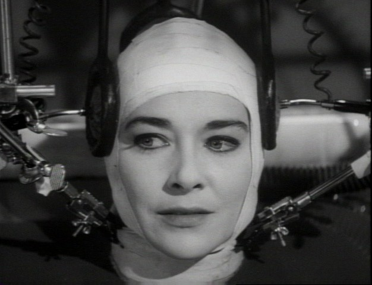

The Brain That Wouldn't Die, frame at 28:39
Joseph Green · 1962 · Film, black and white (frame)
Free to use
The film was shot independently around Tarrytown, New York, in 1959 under the working title The Black Door. The producer Rex Carlton suggested calling it I Was a Teenage Brain Surgeon. It waited until 3 May 1962 for release, when American International Pictures cut it to 71 minutes and paired it with Invasion of the Star Creatures. A flawed copyright notice put it in the public domain in the United States from the day it came out.